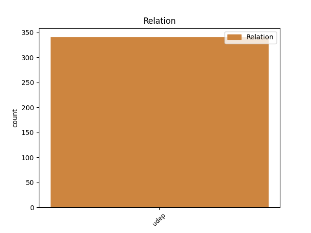
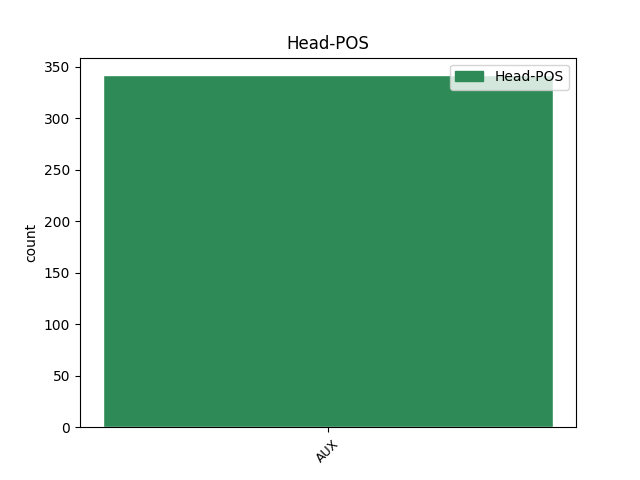
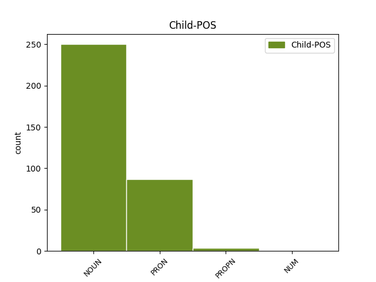

Distribution of features within this leaf



Agreement Rules sorted by frequency.
- When the dependent token is the underspecified dependency(udep) of the head token, and the head token is AUX and the dependent token is NOUN.
1 forma _ _ _ _ 0 _ _ _
2 ergo _ _ _ _ 0 _ _ _
3 caelestis _ _ _ _ 0 _ _ _
4 corporis _ _ _ _ 0 _ _ _
5 , _ _ _ _ 0 _ _ _
6 etsi _ _ _ _ 0 _ _ _
7 non _ _ _ _ 0 _ _ _
8 sit sum AUX N3|modB|tem1|gen6 Mood=Sub|Number=Sing|Person=3|Tense=Pres|VerbForm=Fin|Voice=Act 0 _ _ _
9 simpliciter _ _ _ _ 0 _ _ _
10 nobilior _ _ _ _ 0 _ _ _
11 anima anima NOUN F1|grn1|casF|gen2 Case=Abl|Degree=Pos|Gender=Fem|Number=Sing 8 udep _ _
12 animalis _ _ _ _ 0 _ _ _
13 , _ _ _ _ 0 _ _ _
14 est _ _ _ _ 0 _ _ _
15 tamen _ _ _ _ 0 _ _ _
16 nobilior _ _ _ _ 0 _ _ _
17 quantum _ _ _ _ 0 _ _ _
18 ad _ _ _ _ 0 _ _ _
19 rationem _ _ _ _ 0 _ _ _
20 formae _ _ _ _ 0 _ _ _
21 , _ _ _ _ 0 _ _ _
22 perficit _ _ _ _ 0 _ _ _
23 enim _ _ _ _ 0 _ _ _
24 totaliter _ _ _ _ 0 _ _ _
25 suam _ _ _ _ 0 _ _ _
26 materiam _ _ _ _ 0 _ _ _
27 , _ _ _ _ 0 _ _ _
28 ut _ _ _ _ 0 _ _ _
29 non _ _ _ _ 0 _ _ _
30 sit _ _ _ _ 0 _ _ _
31 in _ _ _ _ 0 _ _ _
32 potentia _ _ _ _ 0 _ _ _
33 ad _ _ _ _ 0 _ _ _
34 aliam _ _ _ _ 0 _ _ _
35 formam _ _ _ _ 0 _ _ _
36 ; _ _ _ _ 0 _ _ _
1 si _ _ _ _ 0 _ _ _
2 quis _ _ _ _ 0 _ _ _
3 autem _ _ _ _ 0 _ _ _
4 velit _ _ _ _ 0 _ _ _
5 dicere _ _ _ _ 0 _ _ _
6 animam _ _ _ _ 0 _ _ _
7 intellectivam _ _ _ _ 0 _ _ _
8 non _ _ _ _ 0 _ _ _
9 esse _ _ _ _ 0 _ _ _
10 corporis _ _ _ _ 0 _ _ _
11 formam _ _ _ _ 0 _ _ _
12 , _ _ _ _ 0 _ _ _
13 oportet _ _ _ _ 0 _ _ _
14 quod _ _ _ _ 0 _ _ _
15 inveniat _ _ _ _ 0 _ _ _
16 modum _ _ _ _ 0 _ _ _
17 quo qui PRON F1|grn1|casF|gen1 Case=Abl|Degree=Pos|Gender=Masc|Number=Sing|PronType=Rel 24 udep _ _
18 ista _ _ _ _ 0 _ _ _
19 actio _ _ _ _ 0 _ _ _
20 quae _ _ _ _ 0 _ _ _
21 est _ _ _ _ 0 _ _ _
22 intelligere _ _ _ _ 0 _ _ _
23 , _ _ _ _ 0 _ _ _
24 sit sum AUX N3|modB|tem1|gen6 Mood=Sub|Number=Sing|Person=3|Tense=Pres|VerbForm=Fin|Voice=Act 0 _ _ _
25 huius _ _ _ _ 0 _ _ _
26 hominis _ _ _ _ 0 _ _ _
27 actio _ _ _ _ 0 _ _ _
28 , _ _ _ _ 0 _ _ _
29 experitur _ _ _ _ 0 _ _ _
30 enim _ _ _ _ 0 _ _ _
31 unusquisque _ _ _ _ 0 _ _ _
32 seipsum _ _ _ _ 0 _ _ _
33 esse _ _ _ _ 0 _ _ _
34 qui _ _ _ _ 0 _ _ _
35 intelligit _ _ _ _ 0 _ _ _
36 . _ _ _ _ 0 _ _ _
1 discedite _ _ _ _ 0 _ _ _
2 a _ _ _ _ 0 _ _ _
3 me _ _ _ _ 0 _ _ _
4 , _ _ _ _ 0 _ _ _
5 maledicti _ _ _ _ 0 _ _ _
6 , _ _ _ _ 0 _ _ _
7 in _ _ _ _ 0 _ _ _
8 ignem _ _ _ _ 0 _ _ _
9 aeternum _ _ _ _ 0 _ _ _
10 , _ _ _ _ 0 _ _ _
11 qui _ _ _ _ 0 _ _ _
12 paratus _ _ _ _ 0 _ _ _
13 est sum AUX N3|modA|tem1|gen6 Mood=Ind|Number=Sing|Person=3|Tense=Pres|VerbForm=Fin|Voice=Act 0 _ _ _
14 diabolo diabolus PROPN B1|grn1|casC|gen1|vgr1 Case=Dat|Degree=Pos|Gender=Masc|Number=Sing 13 udep _ _
15 et _ _ _ _ 0 _ _ _
16 angelis _ _ _ _ 0 _ _ _
17 eius _ _ _ _ 0 _ _ _
18 . _ _ _ _ 0 _ _ _
1 et _ _ _ _ 0 _ _ _
2 contingit _ _ _ _ 0 _ _ _
3 quod _ _ _ _ 0 _ _ _
4 est sum AUX N3|modA|tem1|gen6 Mood=Ind|Number=Sing|Person=3|Tense=Pres|VerbForm=Fin|Voice=Act 0 _ _ _
5 malum _ _ _ _ 0 _ _ _
6 uni unus NUM F1|grn1|casC|gen3 Case=Dat|Degree=Pos|Gender=Neut|Number=Sing|NumType=Card 4 udep _ SpaceAfter=No
7 , _ _ _ _ 0 _ _ _
8 esse _ _ _ _ 0 _ _ _
9 bonum _ _ _ _ 0 _ _ _
10 alteri _ _ _ _ 0 _ _ _
11 . _ _ _ _ 0 _ _ _
Disagree Examples:
1 si _ _ _ _ 0 _ _ _
2 virtutem _ _ _ _ 0 _ _ _
3 et _ _ _ _ 0 _ _ _
4 opera _ _ _ _ 0 _ _ _
5 eorum _ _ _ _ 0 _ _ _
6 , _ _ _ _ 0 _ _ _
7 scilicet _ _ _ _ 0 _ _ _
8 caeli _ _ _ _ 0 _ _ _
9 et _ _ _ _ 0 _ _ _
10 stellarum _ _ _ _ 0 _ _ _
11 et _ _ _ _ 0 _ _ _
12 elementorum _ _ _ _ 0 _ _ _
13 mundi _ _ _ _ 0 _ _ _
14 , _ _ _ _ 0 _ _ _
15 mirati _ _ _ _ 0 _ _ _
16 sunt _ _ _ _ 0 _ _ _
17 , _ _ _ _ 0 _ _ _
18 scilicet _ _ _ _ 0 _ _ _
19 philosophi _ _ _ _ 0 _ _ _
20 , _ _ _ _ 0 _ _ _
21 intelligant _ _ _ _ 0 _ _ _
22 quoniam _ _ _ _ 0 _ _ _
23 qui _ _ _ _ 0 _ _ _
24 fecit _ _ _ _ 0 _ _ _
25 haec _ _ _ _ 0 _ _ _
26 , _ _ _ _ 0 _ _ _
27 fortior _ _ _ _ 0 _ _ _
28 est sum AUX N3|modA|tem1|gen6 Mood=Ind|Number=Sing|Person=3|Tense=Pres|VerbForm=Fin|Voice=Act 0 _ _ _
29 illis ille PRON F1|grn1|casO|gen3 Case=Abl|Degree=Pos|Gender=Neut|Number=Plur|PronType=Dem 28 udep _ SpaceAfter=No
30 . _ _ _ _ 0 _ _ _
1 homo _ _ _ _ 0 _ _ _
2 , _ _ _ _ 0 _ _ _
3 qui _ _ _ _ 0 _ _ _
4 per _ _ _ _ 0 _ _ _
5 fidem _ _ _ _ 0 _ _ _
6 in _ _ _ _ 0 _ _ _
7 deum _ _ _ _ 0 _ _ _
8 ducitur _ _ _ _ 0 _ _ _
9 sicut _ _ _ _ 0 _ _ _
10 in _ _ _ _ 0 _ _ _
11 ultimum _ _ _ _ 0 _ _ _
12 finem _ _ _ _ 0 _ _ _
13 , _ _ _ _ 0 _ _ _
14 ex _ _ _ _ 0 _ _ _
15 hoc _ _ _ _ 0 _ _ _
16 quod _ _ _ _ 0 _ _ _
17 ignorat _ _ _ _ 0 _ _ _
18 naturas _ _ _ _ 0 _ _ _
19 rerum _ _ _ _ 0 _ _ _
20 , _ _ _ _ 0 _ _ _
21 et _ _ _ _ 0 _ _ _
22 per _ _ _ _ 0 _ _ _
23 consequens _ _ _ _ 0 _ _ _
24 gradum _ _ _ _ 0 _ _ _
25 sui _ _ _ _ 0 _ _ _
26 ordinis _ _ _ _ 0 _ _ _
27 in _ _ _ _ 0 _ _ _
28 universo _ _ _ _ 0 _ _ _
29 , _ _ _ _ 0 _ _ _
30 aliquibus _ _ _ _ 0 _ _ _
31 creaturis _ _ _ _ 0 _ _ _
32 se _ _ _ _ 0 _ _ _
33 putat _ _ _ _ 0 _ _ _
34 esse _ _ _ _ 0 _ _ _
35 subiectum _ _ _ _ 0 _ _ _
36 quibus qui PRON F1|grn1|casO|gen2 Case=Abl|Degree=Pos|Gender=Fem|Number=Plur|PronType=Rel 38 udep _ _
37 superior _ _ _ _ 0 _ _ _
38 est sum AUX N3|modA|tem1|gen6 Mood=Ind|Number=Sing|Person=3|Tense=Pres|VerbForm=Fin|Voice=Act 0 _ _ _
39 : _ _ _ _ 0 _ _ _
1 alias _ _ _ _ 0 _ _ _
2 sequeretur _ _ _ _ 0 _ _ _
3 quod _ _ _ _ 0 _ _ _
4 essent _ _ _ _ 0 _ _ _
5 infinitae _ _ _ _ 0 _ _ _
6 relationes _ _ _ _ 0 _ _ _
7 actu _ _ _ _ 0 _ _ _
8 in _ _ _ _ 0 _ _ _
9 eodem _ _ _ _ 0 _ _ _
10 , _ _ _ _ 0 _ _ _
11 cum _ _ _ _ 0 _ _ _
12 numeri _ _ _ _ 0 _ _ _
13 infiniti _ _ _ _ 0 _ _ _
14 in _ _ _ _ 0 _ _ _
15 potentia _ _ _ _ 0 _ _ _
16 sint _ _ _ _ 0 _ _ _
17 maiores _ _ _ _ 0 _ _ _
18 binario _ _ _ _ 0 _ _ _
19 , _ _ _ _ 0 _ _ _
20 quibus qui PRON F1|grn1|casO|gen1 Case=Abl|Degree=Pos|Gender=Masc|Number=Plur|PronType=Rel 23 udep _ _
21 omnibus _ _ _ _ 0 _ _ _
22 ipse _ _ _ _ 0 _ _ _
23 est sum AUX N3|modA|tem1|gen6 Mood=Ind|Number=Sing|Person=3|Tense=Pres|VerbForm=Fin|Voice=Act 0 _ _ _
24 prior _ _ _ _ 0 _ _ _
25 . _ _ _ _ 0 _ _ _
1 impossibile _ _ _ _ 0 _ _ _
2 est _ _ _ _ 0 _ _ _
3 igitur _ _ _ _ 0 _ _ _
4 aliquod _ _ _ _ 0 _ _ _
5 unum _ _ _ _ 0 _ _ _
6 de _ _ _ _ 0 _ _ _
7 duobus _ _ _ _ 0 _ _ _
8 praedicari _ _ _ _ 0 _ _ _
9 ita _ _ _ _ 0 _ _ _
10 quod _ _ _ _ 0 _ _ _
11 de _ _ _ _ 0 _ _ _
12 neutro _ _ _ _ 0 _ _ _
13 per _ _ _ _ 0 _ _ _
14 causam _ _ _ _ 0 _ _ _
15 dicatur _ _ _ _ 0 _ _ _
16 , _ _ _ _ 0 _ _ _
17 sed _ _ _ _ 0 _ _ _
18 oportet _ _ _ _ 0 _ _ _
19 vel _ _ _ _ 0 _ _ _
20 unum _ _ _ _ 0 _ _ _
21 esse _ _ _ _ 0 _ _ _
22 alterius _ _ _ _ 0 _ _ _
23 causam _ _ _ _ 0 _ _ _
24 , _ _ _ _ 0 _ _ _
25 sicut _ _ _ _ 0 _ _ _
26 ignis _ _ _ _ 0 _ _ _
27 est _ _ _ _ 0 _ _ _
28 causa _ _ _ _ 0 _ _ _
29 caloris _ _ _ _ 0 _ _ _
30 corpori _ _ _ _ 0 _ _ _
31 mixto _ _ _ _ 0 _ _ _
32 , _ _ _ _ 0 _ _ _
33 cum _ _ _ _ 0 _ _ _
34 tamen _ _ _ _ 0 _ _ _
35 utrumque _ _ _ _ 0 _ _ _
36 calidum _ _ _ _ 0 _ _ _
37 dicatur _ _ _ _ 0 _ _ _
38 ; _ _ _ _ 0 _ _ _
39 vel _ _ _ _ 0 _ _ _
40 oportet _ _ _ _ 0 _ _ _
41 quod _ _ _ _ 0 _ _ _
42 aliquod _ _ _ _ 0 _ _ _
43 tertium _ _ _ _ 0 _ _ _
44 sit _ _ _ _ 0 _ _ _
45 causa _ _ _ _ 0 _ _ _
46 utrique _ _ _ _ 0 _ _ _
47 , _ _ _ _ 0 _ _ _
48 sicut _ _ _ _ 0 _ _ _
49 duabus _ _ _ _ 0 _ _ _
50 candelis candela NOUN A1|grn1|casL|gen2 Case=Dat|Degree=Pos|Gender=Fem|Number=Plur 52 udep _ _
51 ignis _ _ _ _ 0 _ _ _
52 est sum AUX N3|modA|tem1|gen6 Mood=Ind|Number=Sing|Person=3|Tense=Pres|VerbForm=Fin|Voice=Act 0 _ _ _
53 causa _ _ _ _ 0 _ _ _
54 lucendi _ _ _ _ 0 _ _ _
55 . _ _ _ _ 0 _ _ _
1 non _ _ _ _ 0 _ _ _
2 potest _ _ _ _ 0 _ _ _
3 igitur _ _ _ _ 0 _ _ _
4 distinctio _ _ _ _ 0 _ _ _
5 in _ _ _ _ 0 _ _ _
6 rebus _ _ _ _ 0 _ _ _
7 procedere _ _ _ _ 0 _ _ _
8 a _ _ _ _ 0 _ _ _
9 duobus _ _ _ _ 0 _ _ _
10 contrariis _ _ _ _ 0 _ _ _
11 principiis _ _ _ _ 0 _ _ _
12 quorum qui PRON F1|grn1|casK|gen3 Case=Gen|Degree=Pos|Gender=Neut|Number=Plur|PronType=Rel 14 udep _ _
13 unum _ _ _ _ 0 _ _ _
14 sit sum AUX N3|modB|tem1|gen6 Mood=Sub|Number=Sing|Person=3|Tense=Pres|VerbForm=Fin|Voice=Act 0 _ _ _
15 bonum _ _ _ _ 0 _ _ _
16 et _ _ _ _ 0 _ _ _
17 aliud _ _ _ _ 0 _ _ _
18 malum _ _ _ _ 0 _ _ _
19 . _ _ _ _ 0 _ _ _